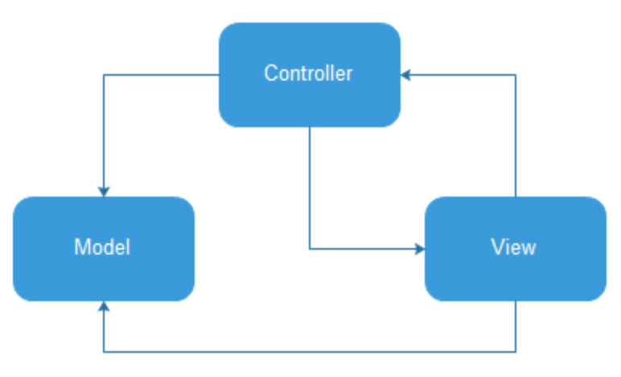
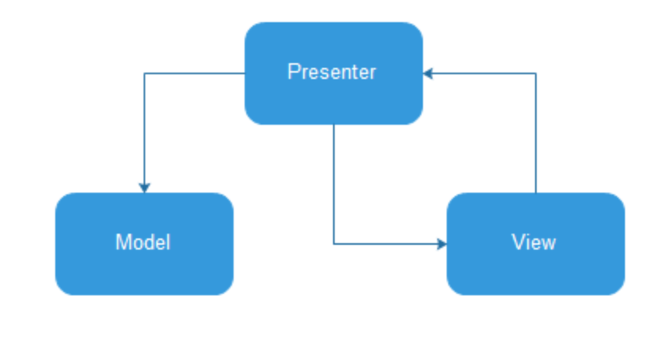
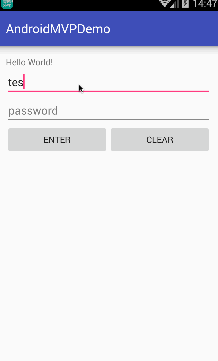

MVP模式的核心思想：
MVP把Activity中的UI逻辑抽象成View接口，把业务逻辑抽象成功接口，Model类还是原来的Model。
MVC

- 其中View层其实就是程序的UI界面，用于向用户展示数据以及接收用户的输入
- 而Model层就是JavaBean实体类，用于保存实例数据
- Controller控制器用于更新UI界面和数据实例
View层接受用户的输入，然后通过Controller修改对应的Model实例；同时，当Model实例的数据发生变化的时候，需要修改UI界面，可以通过Controller更新界面。View层也可以直接更新Model实例的数据，而不用每次都通过Controller，这样对于一些简单的数据更新工作会变得方便许多。
MVP
MVP与MVC最不同的一点是M与V是不直接关联的也是就Model与View不存在直接关系，这两者之间间隔着的是Presenter层
Model
Model 是用户界面需要显示数据的抽象，也可以理解为从业务数据（结果）那里到用户界面的抽象（Business rule, data access, model classes）
View
视图这一层体现的很轻薄，负责显示数据、提供友好界面跟用户交互就行。MVP下Activity和Fragment体现在了这一层，Activity一般也就做加载UI视图、设置监听再交由Presenter处理的一些工作，所以也就需要持有相应Presenter的引用。例如，Activity上滚动列表时隐藏或者显示Acionbar（Toolbar），这样的UI逻辑时也应该在这一层。另外在View上输入的数据做一些判断时，例如，EditText的输入数据，假如是简单的非空判断则可以作为View层的逻辑，而当需要对EditText的数据进行更复杂的比较时，如从数据库获取本地数据进行判断时明显需要经过Model层才能返回了，所以这些细节需要自己掂量。
Presenter
Presenter这一层处理着程序各种逻辑的分发，收到View层UI上的反馈命令、定时命令、系统命令等指令后分发处理逻辑交由业务层做具体的业务操作，然后将得到的 Model 给 View 显示。

这就是MVP模式，现在这样的话，Activity的工作的简单了，只用来响应生命周期，其他工作都丢到Presenter中去完成。从上图可以看出，Presenter是Model和View之间的桥梁，为了让结构变得更加简单，View并不能直接对Model进行操作，这也是MVP与MVC最大的不同之处。
优点
- 分离了视图逻辑和业务逻辑，降低了耦合
- Activity只处理生命周期的任务，代码变得更加简洁
- 视图逻辑和业务逻辑分别抽象到了View和Presenter的接口中去，提高代码的可阅读性
- Presenter被抽象成接口，可以有多种具体的实现，所以方便进行单元测试
- 把业务逻辑抽到Presenter中去，避免后台线程引用着Activity导致Activity的资源无法被系统回收从而引起内存泄露和OOM
代码变得更加简洁
使用MVP之后，Activity就能瘦身许多了，基本上只有FindView、SetListener以及Init的代码。其他的就是对Presenter的调用，还有对View接口的实现。这种情形下阅读代码就容易多了，而且你只要看Presenter的接口，就能明白这个模块都有哪些业务，很快就能定位到具体代码。Activity变得容易看懂，容易维护，以后要调整业务、删减功能也就变得简单许多。
方便进行单元测试
MVP中，由于业务逻辑都在Presenter里，我们完全可以写一个PresenterTest的实现类继承Presenter的接口，现在只要在Activity里把Presenter的创建换成PresenterTest，就能进行单元测试了，测试完再换回来即可。万一发现还得进行测试，那就再换成PresenterTest吧。
避免内存泄露
Android APP 发生OOM的最大原因就是出现内存泄露造成APP的内存不够用，而造成内存泄露的两大原因之一就是Activity泄露（Activity Leak）（另一个原因是Bitmap泄露（Bitmap Leak））
Java一个强大的功能就是其虚拟机的内存回收机制，这个功能使得Java用户在设计代码的时候，不用像C++用户那样考虑对象的回收问题。然而，Java用户总是喜欢随便写一大堆对象，然后幻想着虚拟机能帮他们处理好内存的回收工作。可是虚拟机在回收内存的时候，只会回收那些没有被引用的对象，被引用着的对象因为还可能会被调用，所以不能回收。
Activity是有生命周期的，用户随时可能切换Activity，当APP的内存不够用的时候，系统会回收处于后台的Activity的资源以避免OOM。
采用传统的MV模式，一大堆异步任务和对UI的操作都放在Activity里面，比如你可能从网络下载一张图片，在下载成功的回调里把图片加载到 Activity 的 ImageView 里面，所以异步任务保留着对Activity的引用。这样一来，即使Activity已经被切换到后台（onDestroy已经执行），这些异步任务仍然保留着对Activity实例的引用，所以系统就无法回收这个Activity实例了，结果就是Activity Leak。Android的组件中，Activity对象往往是在堆（Java Heap）里占最多内存的，所以系统会优先回收Activity对象，如果有Activity Leak，APP很容易因为内存不够而OOM。
采用MVP模式，只要在当前的Activity的onDestroy里，分离异步任务对Activity的引用，就能避免 Activity Leak。
MVP 使用
MVP的主要特点就是把Activity里的许多逻辑都抽离到View和Presenter接口中去，并由具体的实现类来完成。

- 创建IPresenter接口，把所有业务逻辑的接口都放在这里，并创建它的实现PresenterCompl（在这里可以方便地查看业务功能，由于接口可以有多种实现所以也方便写单元测试），IPresenter持有 IView,调用 IView 中的方法
- 创建IView接口，把所有视图逻辑的接口都放在这里，其实现类是当前的Activity/Fragment
- 由UML图可以看出，Activity里包含了一个IPresenter，而PresenterCompl里又包含了一个IView并且依赖了Model。Activity里只保留对IPresenter的调用，其它工作全部留到PresenterCompl中实现
- Model并不是必须有的，但是一定会有View和Presenter
DMEO
简单的登陆界面的例子

- 登陆 view 接口
package io.github.xuyushi.androidmvpdemo.Login.view;
/**
* Created by xuyushi on 16/2/28.
*/
public interface ILoginView {
void clearEditText();
void showProgress();
void hideProgress();
void setUsernameError();
void setPasswordError();
String getUsername();
String getPassword();
void loginSuccess();
}
登陆Presenter接口
package io.github.xuyushi.androidmvpdemo.Login.presenter;
/**
* Created by xuyushi on 16/2/28.
*/
public interface ILoginPresenter {
void doLogin(String username, String password);
void clear();
void onDestroy();
}
实现Presenter接口
package io.github.xuyushi.androidmvpdemo.Login.presenter;
import android.os.Handler;
import io.github.xuyushi.androidmvpdemo.Login.model.User;
import io.github.xuyushi.androidmvpdemo.Login.view.ILoginView;
/**
* Created by xuyushi on 16/2/28.
*/
public class LoginPresenter implements ILoginPresenter {
private ILoginView mLoginView;
private User mUser;
public LoginPresenter(ILoginView loginView) {
this.mLoginView = loginView;
initUser();
}
private void initUser() {
mUser = new User(mLoginView.getUsername(), mLoginView.getPassword());
}
@Override
public void doLogin(String username, String password) {
mLoginView.showProgress();
new Handler().postDelayed(new Runnable() {
@Override
public void run() {
mLoginView.hideProgress();
int code = mUser.checkUserValidity(mLoginView.getUsername(), mLoginView.getPassword());
if (code == -1) {
mLoginView.setPasswordError();
} else if (code == 0) {
mLoginView.loginSuccess();
}
}
}, 2000);
}
@Override
public void clear() {
mLoginView.clearEditText();
}
@Override
public void onDestroy() {
mLoginView = null;
}
}
定义model
package io.github.xuyushi.androidmvpdemo.Login.model;
/**
* Created by xuyushi on 16/2/28.
*/
public class User {
private String username;
private String password;
public String getUsername() {
return username;
}
public void setUsername(String username) {
this.username = username;
}
public String getPassword() {
return password;
}
public void setPassword(String password) {
this.password = password;
}
public User(String username, String password) {
this.username = username;
this.password = password;
}
public int checkUserValidity(String username, String password) {
if (username == null || password == null ||
username.isEmpty() ||
password.isEmpty()) {
return -1;
}
return 0;
}
}
在 Activity 中实现 view接口
package io.github.xuyushi.androidmvpdemo.Login.view;
import android.os.Bundle;
import android.support.v7.app.AppCompatActivity;
import android.view.View;
import android.widget.Button;
import android.widget.EditText;
import android.widget.ProgressBar;
import android.widget.Toast;
import butterknife.Bind;
import butterknife.ButterKnife;
import io.github.xuyushi.androidmvpdemo.Login.presenter.ILoginPresenter;
import io.github.xuyushi.androidmvpdemo.Login.presenter.LoginPresenter;
import io.github.xuyushi.androidmvpdemo.R;
public class LoginActivity extends AppCompatActivity
implements ILoginView, View.OnClickListener {
private ILoginPresenter mLoginPresenter;
@Bind(R.id.et_username)
EditText etUsername;
@Bind(R.id.et_passwrod)
EditText etPasswrod;
@Bind(R.id.bt_enter)
Button btEnter;
@Bind(R.id.bt_clear)
Button btClear;
@Bind(R.id.progress)
ProgressBar progress;
@Override
protected void onCreate(Bundle savedInstanceState) {
super.onCreate(savedInstanceState);
setContentView(R.layout.activity_main);
ButterKnife.bind(this);
mLoginPresenter = new LoginPresenter(this);
btEnter.setOnClickListener(this);
btClear.setOnClickListener(this);
}
@Override
public void clearEditText() {
etPasswrod.setText("");
etUsername.setText("");
}
@Override
public void showProgress() {
progress.setVisibility(View.VISIBLE);
}
@Override
public void hideProgress() {
progress.setVisibility(View.GONE);
}
@Override
public void setUsernameError() {
etUsername.setError("username error");
}
@Override
public void setPasswordError() {
etPasswrod.setError("password error");
}
@Override
public String getUsername() {
return etUsername.getText().toString();
}
@Override
public String getPassword() {
return etPasswrod.getText().toString();
}
@Override
public void loginSuccess() {
//start act Main
Toast.makeText(this, "login success", Toast.LENGTH_SHORT);
finish();
}
@Override
public void onClick(View v) {
switch (v.getId()){
case R.id.bt_clear:
mLoginPresenter.clear();
break;
case R.id.bt_enter:
mLoginPresenter.doLogin(etUsername.getText().toString(),
etPasswrod.getText().toString());
break;
}
}
@Override
protected void onDestroy() {
mLoginPresenter.onDestroy();
super.onDestroy();
}
}
源码地址
https://github.com/xuyushi/AndroidMVPDemo